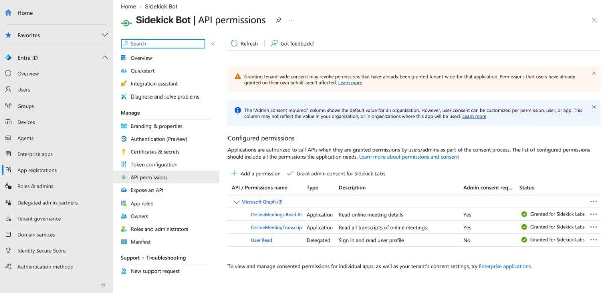
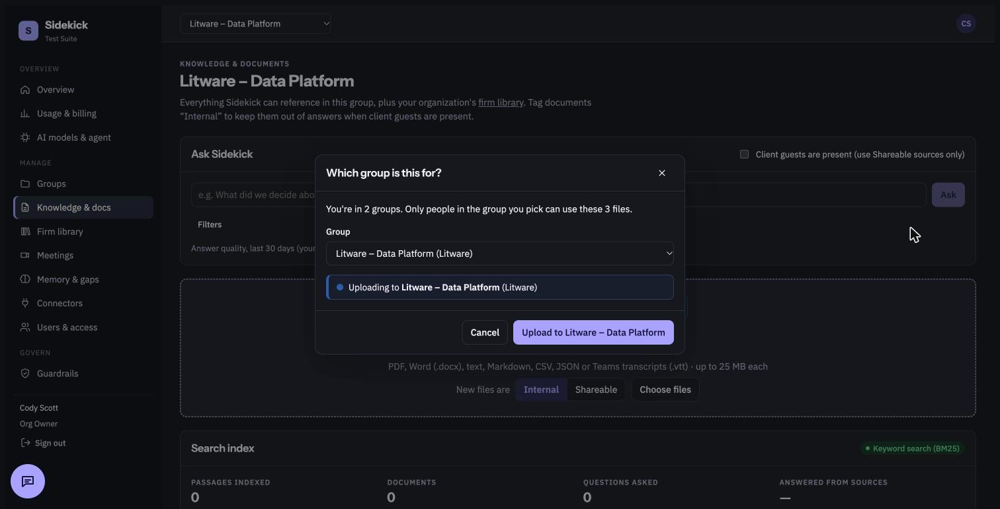
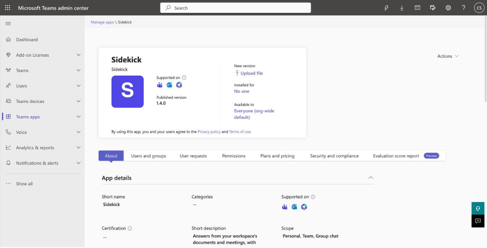
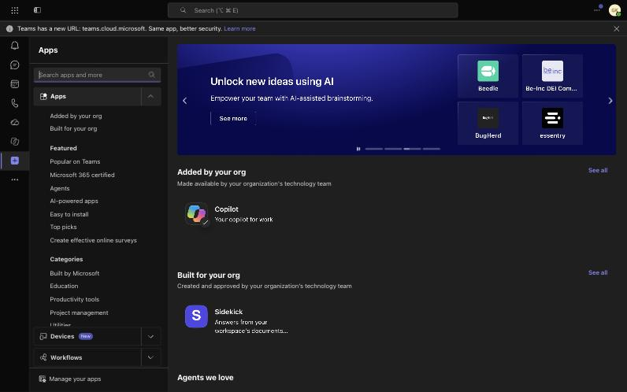
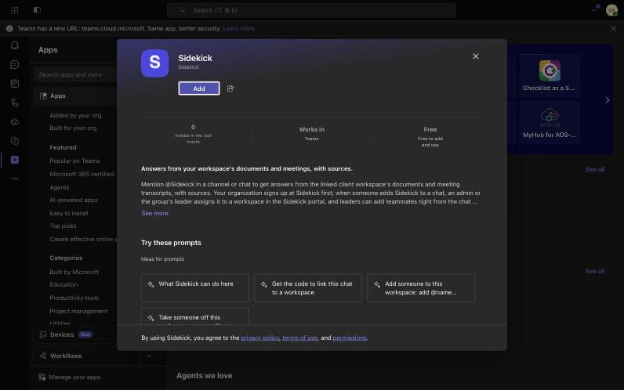
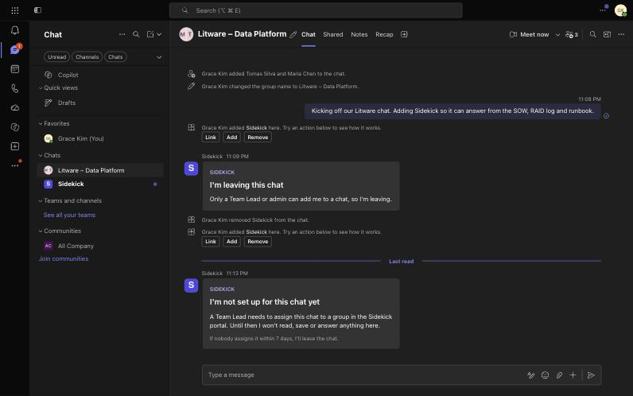
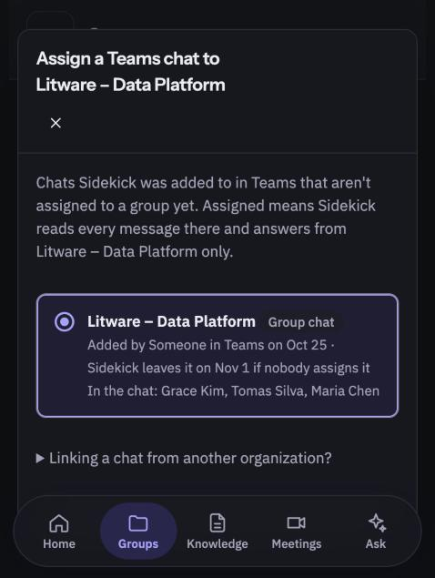
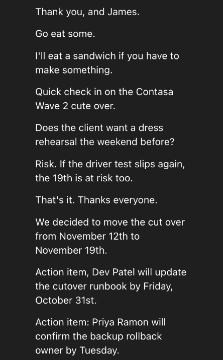
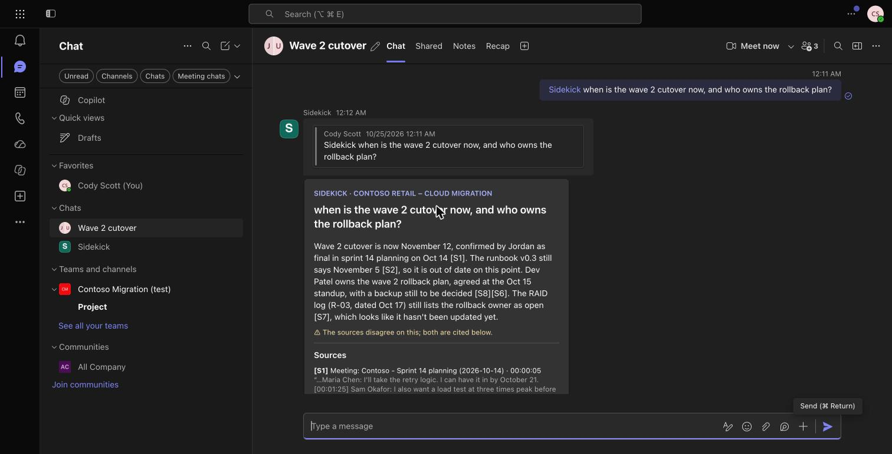
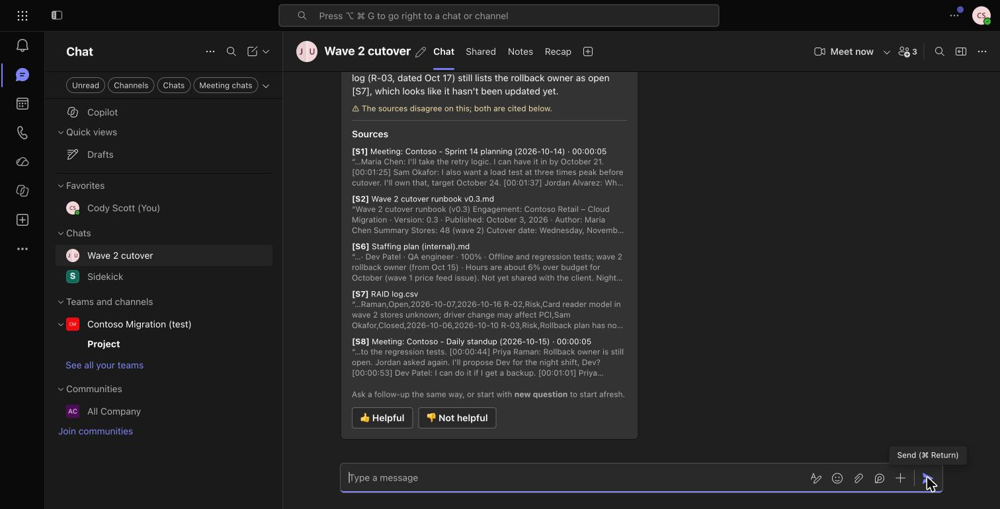

One app, a handful of cloud services, and Microsoft Teams. This page follows a new client from sign-up to their first meeting notes, then traces a question and a meeting through the system, and shows the walls that keep each client's data apart.
Sidekick is a single Next.js application. The same container is the public website, the customer portal, your Owner Console, the API and the Teams bot. There's no separate "backend" to keep in sync.
| Service | What it does for Sidekick | If it's down |
|---|---|---|
| Azure Container Apps | Runs the one app container (0.5 CPU, 1 GB, one copy today). HTTPS, health probes, keeps old versions for rollback. | Everything is down. A bad deploy rolls itself back if the new version isn't healthy within ten minutes. |
| Postgres | Every record: companies, groups, people, documents' text, meetings, action items, chats, audit log, usage. 35 days of point-in-time backups. | The app can't work. A backup restores to a new server (RUNBOOKS → Restore the database). |
| Azure AI Search + embeddings | A searchable copy of every passage, with "meaning" search (embeddings from text-embedding-3-small) so "go-live" finds "cutover". | Answers keep working. Search falls back to the keyword index inside Postgres, which is always kept. The Azure copy rebuilds itself from Postgres. |
| Claude (Anthropic) | Writes answers with sources, meeting notes, reminders and the guardrail check. Opus 5.5 by default, Haiku 5.5 for cheap jobs. Busy errors are retried with backoff. | People see a plain "very busy, try again in a minute". Questions aren't answered and notes wait for a retry (meeting jobs retry automatically). |
| Azure Bot + Teams SDK | Delivers Teams chat messages to /api/messages and carries Sidekick's replies and cards back. Every message is signed by Microsoft. | Sidekick is quiet in Teams. The portal still works. |
| Microsoft Entra ID | "Sign in with Microsoft" and Teams tab sign-in. Sidekick checks Microsoft's signed tokens. | Microsoft sign-in fails. Password sign-in still works unless the client requires Microsoft sign-in. |
| Microsoft Graph | Imports people from the client's directory, recognises who added Sidekick, removes Sidekick from chats it shouldn't be in, reads meeting transcripts. | Imports and new meeting notes pause. Meeting checks catch up on the next 15-minute poll. |
| Key Vault | Holds the Claude key, database password, encryption key and app secrets. Only the app's managed identity can read them. | The running app keeps its secrets in memory; a fresh start would fail until it's back. |
| Log Analytics + App Insights | Logs, a 5-minute uptime test from outside, email alerts. The app's own Activity page and Owner Console show the rest. | Sidekick keeps running; you just lose visibility. |
| GitHub Actions | Runs ~400 tests on both databases for every pull request, then deploys each merge to main with a managed identity (no stored password). | No new deploys. The live app is unaffected. |
Three kinds of people do the setup, in this order. Most steps happen once per client company. The made-up client here is Northwind Consulting, whose engagement team works for its client Contoso.
The company signs up at /signup (name, owner, plan, free trial, then checkout) and the setup wizard follows. Self-service sign-up is off for now, so today the Sidekick team creates each client; flipping it on is one switch in the Owner Console. Plans are priced per group: Starter $199 (1 group), Team $699 (5), Business $1,999 (20), Enterprise custom.
Settings → Microsoft sign-in → Connect with Microsoft. This ties the Sidekick company to the client's Microsoft 365 tenant. From then on people use "Sign in with Microsoft", and on Business and up the owner can require it (no Sidekick passwords left).
An Org Owner or Admin starts it from Users & access → Approve Sidekick for your organization; a Global Administrator (or Cloud Application Administrator) approves on Microsoft's page. What they approve, in Sidekick's own words:
| Permission | Why Sidekick needs it |
|---|---|
| User.Read (delegated) | Lets people sign in with their work account. Sidekick sees name, email and account id. |
| User.Read.All | Search the directory when an admin imports people or someone types @Sidekick add. Names, work emails, job titles and ids only; never changes anything. |
| TeamsAppInstallation. ReadWriteSelfForChat.All / ForTeam.All | Lets Sidekick remove itself from a chat: when someone other than a Team Lead or admin adds it, when nobody assigns a chat within 7 days, or on "Remove Sidekick from this chat". It can't touch other apps. |
| OnlineMeetingTranscript.Read.All + OnlineMeetings.Read.All | Only used once automatic notes are turned on. Reads a finished meeting's subject, times and invitees to find the group, and its transcript to write notes. Meetings that aren't any group's are skipped and nothing is kept. Never joins or records a call. |
| access_as_user (delegated) | Signs people in to the Sidekick tab in Teams without a password. |
| Chat messages (per chat) | Not part of this approval. Granted per chat when Sidekick is added there; Sidekick reads a chat only once it's assigned to a group. |
One group per client team (e.g. "Contoso cutover", client Contoso, Team Lead Priya Raman). People are added by email or imported from Microsoft 365, each with a role: Org Owner, Org Admin, Team Lead, Member or Viewer. Team Leads can import into their own groups.
In the client's Teams admin center and Teams PowerShell (we send them RUNBOOKS → Automatic meeting notes):
Only a Team Lead, Org Admin or Org Owner may add it. Sidekick checks the adder's Microsoft account (and looks them up in the directory by email if needed); anyone else gets a short card and Sidekick leaves. It posts "I'm not set up for this chat yet" and then reads, saves and answers nothing.
Group page → Teams chats → Assign a chat lists waiting chats with who added Sidekick, when, and who's in it. Tick "client guests" if the client can read the chat. Assigning happens only in the portal, never from Teams. Unassigned after 7 days, Sidekick leaves.
Group → Teams chats → "Meeting notes go to": one chat (usual), several, or "Don't post notes in Teams". Also from the chat: @Sidekick post meeting notes here. Until someone chooses, notes go to one chat (one named "notes", else the first without client guests).
Meetings → Automatic notes after Teams meetings → Turn on. Sidekick checks the setup straight away; if something is missing (approval, access policy, Transcript API access) the panel names it in plain words.
After the group's next transcribed Teams meeting, usually within minutes (at most about 15), the notes card lands in the chosen chat. Section 4 shows how.
Real screens from Sidekick Labs' own Microsoft 365 test organization (Oct 24–25, 2026), with made-up sample data. Step numbers match the list above.










The same path runs whether the question comes from @Sidekick in a Teams chat or from Ask in the portal (ask() in lib/sidekick.ts). Every stop can end the trip early, and each early ending has fixed wording.
In the portal, requireWorkspace refuses any group the person isn't a member of (admins see every group in their own company). In Teams, the chat itself decides the group: an assigned chat belongs to exactly one group. Unassigned chats get no answers at all.
Looks only in this group's documents, meetings, notes, chats, connected tools and the company's firm library (lib/search.ts). With client guests present, only Shareable sources. About 30 candidates are re-ranked (lib/rank.ts): fit to the whole question, freshness, outdated versions ×0.55, firm policy first for policy questions, meeting notes ×1.15. Duplicates are dropped, at most 3 passages per source, the best 10 go to Claude.
No bot joins the call. Sidekick reads the transcript Teams already makes, through Microsoft Graph, after the meeting ends (lib/meetings-graph.ts). This covers scheduled Teams meetings today; "Meet now" calls started from a group chat are being added.
If anyone from another Microsoft organization attended, the meeting is marked Client guests present and its notes count as shareable. Notes from internal meetings are never posted to a chat with client guests, whatever is ticked.
Decisions, requirements, risks and facts on the card can be saved to the group's knowledge with one click; answers then find them first, long after the meeting.
There are two walls: between companies (organizations), and between groups inside a company. Every query in the code carries both the company and the group; an automated test tries to cross each wall on every new feature.
requireWorkspace first. Not a member? "Not found", so it doesn't even confirm the group exists.